1、概述
流程控制语句是火山中非常重要的一类命令，可用于控制程序运行路线，在满足条件时执行一些程序语句，不满足条件时执行另外一些程序语句。
2、如果语句
2.1 如果
本命令根据所提供的逻辑参数的值，来决定是否改变程序的执行位置。如果所提供的逻辑参数值为真，则执行其下属子语句体中的代码，为假则跳过本命令的子语句体。
在如果语句末尾位置按下回车键，会自动进入其子语句体中，如下图：
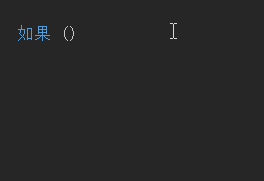
示例：
利用如果语句比较两个整数变量是否相等，如果相等则执行信息框提示相等，否则就会跳过这个信息框。
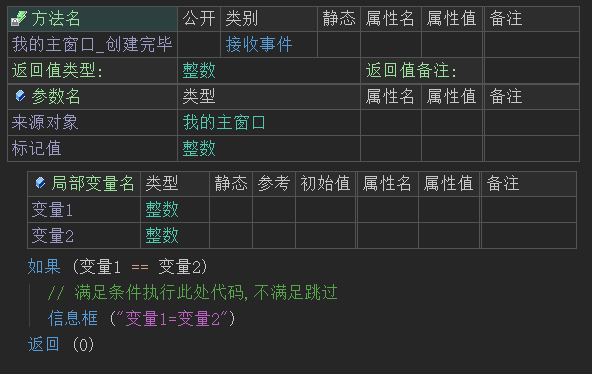
最终会显示信息框提示相等。
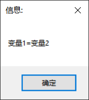
根据上述演示，还可以实现以下效果：
根据如果语句的判定结果来决定信息框最终显示的内容。
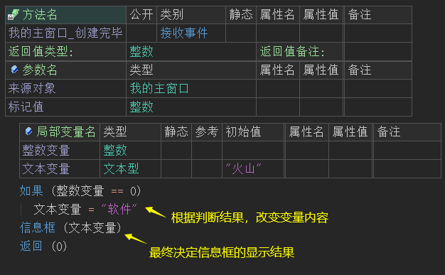
最终信息框的内容会显示“软件”，如果条件不满足，则最终结果会显示“火山”。
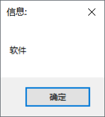
注意：满足条件后执行的代码必须保证是位于子语句体中，如下图所示是错误的。
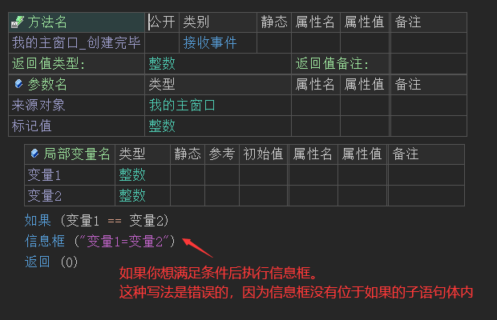
可通过右键菜单“块操作 -> 向外缩进”，让要执行的代码重新回到子语句体中。
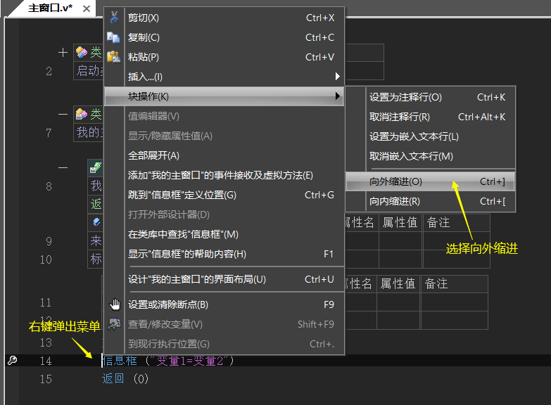
2.2 如果否则
如果语句后面可以跟否则语句，当如果语句的逻辑参数为“假”时，将执行否则语句的子语句体。
示例如下：
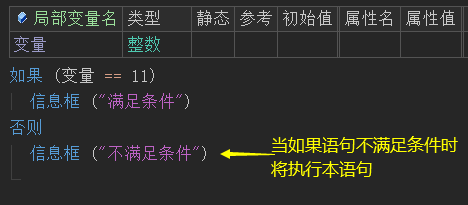
如果语句后面可以跟多个否则语句，可用于判断多种可能的情况。
使用时需要注意以下几点：
(1) 如果语句后可以跟N个否则语句，但否则语句不能在如果语句之前。
(2) 一旦其中任意一个语句执行结果为真，将执行其子语句体的内容，剩余的所有“否则”语句将跳过。
示例如下：
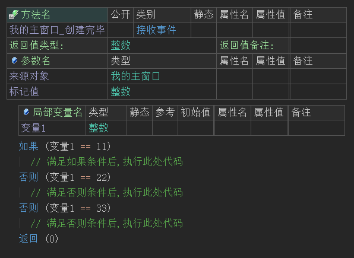
如果判断两个相同的条件，则只会执行首次判断成功的条件。
示例如下：
只会执行第一个满足条件的子语句体，其它条件会跳过。
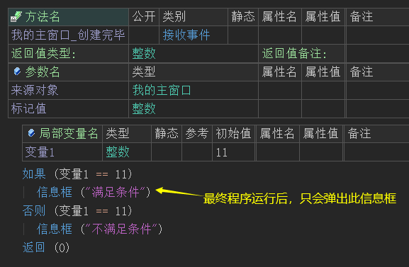
3、如果真语句
本语句同如果语句，本语句只能单独使用，无法配合“否则”语句来使用。
如下图所示：
当满足条件后执行子语句体的内容，否则执行“如果真”语句之外的其它代码。
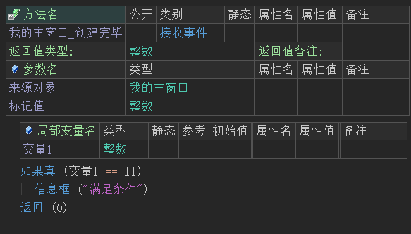
4、分支判断语句
4.1 分支判断与分支
用于判断一个整数值与一系列整数值中某个值是否相等。
这其中要判断的整数值位于“分支判断”语句的参数中，而这一系列整数值则位于“分支”语句的参数中，每个值称为一个分支。
分支判断帮助如下图：
本语句需要提供一个整数类型的数据，用于“欲判断检查的值”，其要判断的值由“分支”语句提供。
注：本方法的子语句体内只能存在分支或默认分支，并且至少包含一个。
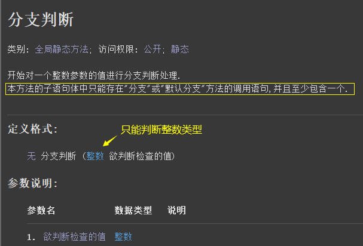
分支帮助如下图：
本语句只能位于“分支判断”的子语句体内，用于检查“分支判断”参数中提供的整数数据，是否等于本语句中的参数值。
如果相等，将去执行本语句的子语句体中的代码，并跳过后续所有其它判断检查分支，否则将跳过本语句的子语句体转去检查后续的下一分支是否满足要求。
注：本语句的参数只能提供立即数或常量。
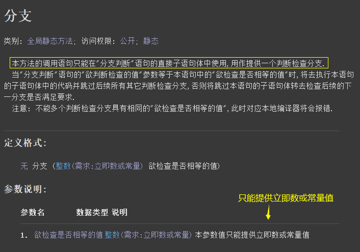
示例如下：
(1) 分支判断语句提供欲判断检查的值。
(2) 分支语句提供欲检查是否相等的值。
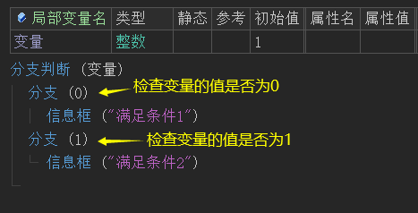
如果分支判断语句的值和某个分支中的值相等，则执行对应分支子语句体的代码。
上图中的“变量”的值为1，则最终结果会弹出“满足条件1”的信息框。
4.2 默认分支
本语句需要在“分支判断”的子语句体中使用，用于指定“默认分支”，如果所有的“分支”都不满足时则执行本语句下的子语句体的内容。
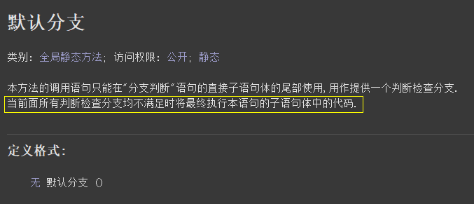
示例如下：
最终结果会弹出“默认分支”下的信息框，因整数变量的初始值为0，并不满足前两个分支。
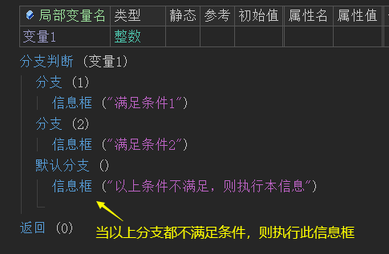
4.3 跳出分支
本语句只能在“分支”或“默认分支”的直接/间接的子语句中使用，用于跳出整个“分支判断”去执行下一条语句。
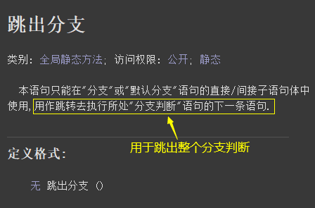
示例如下：
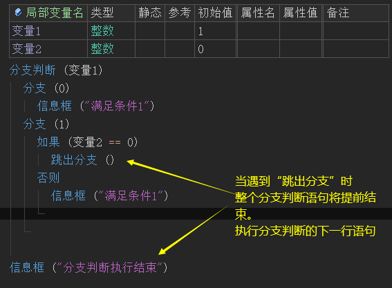